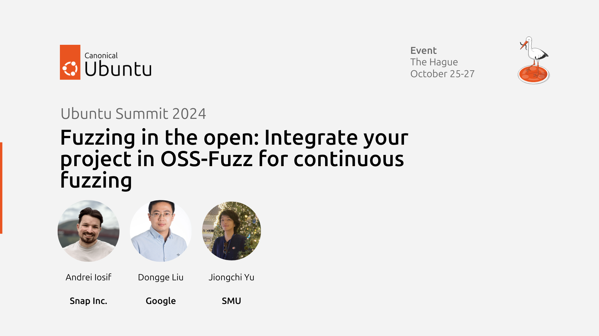

Fuzzing in the Open at Ubuntu Summit 2024
The previous year, fuzzing was one of the topics I covered in my Ubuntu Summit workshop (as in The Open Source Fortress). It was such a groovy experience, and I’m fortunate that I can repeat it on Ubuntu’s 20th anniversary.
Dongge Liu, Jiongchi Yu, and I were accepted to this year’s conference with a 1.5-hour workshop targeting open-source projects that play a role in the overall Internet infrastructure. We will detail how such projects can get integrated into Google’s OSS-Fuzz to benefit from free-of-charge continuous fuzzing. As the workshop is made possible by Jiongchi’s contributions to Google Summer of Code (more on this topic in another post), he will also describe his work in integrating OpenPrinting’s projects (mostly built on C) into OSS-Fuzz.
The conference will also host two other talks on tools improving open-source security. Cristóvão Cordeiro will present his work on Chiselled Ubuntu containers (i.e., distroless-like containers intentionally trimmed down to decrease their size and attack surface), and the folks from Bitergia will discuss their work on GrimoireLab (i.e., risk assessments for open-source dependencies) [6].
If you’ll be in The Hague this week for Ubuntu Summit, I hope to see you in the workshop room and hang out during the HackerSpace organised the same evening. Otherwise, the presentation and materials will be made public shortly after the conference.
